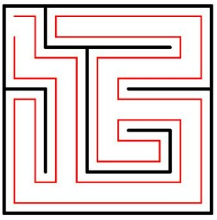
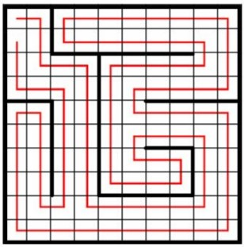
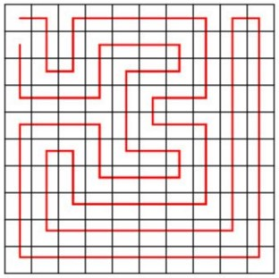
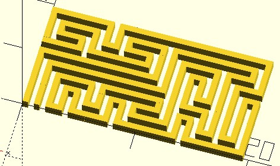
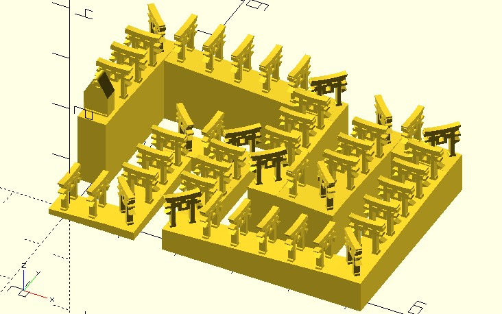
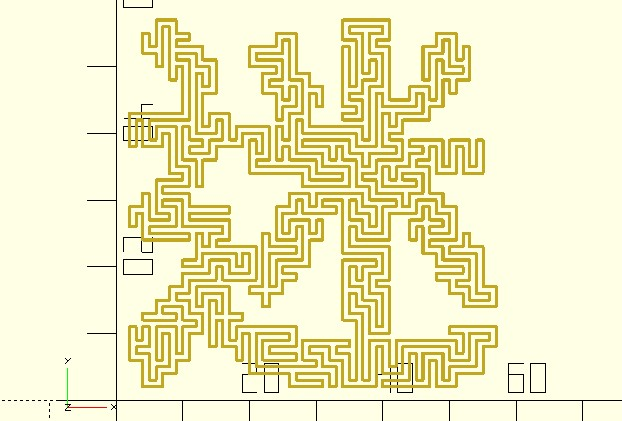

哈密頓路徑
March 17, 2022除了對迷宮進行變形，來創造不同樣貌的迷宮之外，還可以進一步地將迷宮視為一種編碼系統，無論是單純地丟硬幣，或者是特定的走訪方式，就是在為每個細胞選擇一個編碼，牆面的形態不過就是基於編碼的呈現罷了，必要時，你還可以基於迷宮中各細胞被給予的編碼，進一步地轉換為其他編碼。
沿壁法
先來問一個問題，你知道如何走出迷宮嗎？如果是完全迷宮，最簡單的方式之一是沿壁法，也就是固定一隻手摸著牆壁，手不離牆面地前進，一定可以從入口走到出口，就道理而言很簡單，先前談過的，迷宮的路徑會形成一顆樹，摸著牆走，就是繞著整顆樹畫一圈。

給你一張迷宮的圖，你可以很簡單地畫出如上圖的紅線吧！那麼怎麼寫程式自動找出紅線的路徑呢？直覺地會想檢查每個細胞的牆面，不過仔細想想行不通，因為路徑在同一個細胞中是有進有出的，怎麼辦呢？
仔細觀察細胞中最短的紅線，例如上圖中左上角，由左往右的第一條紅線，就像是把細胞畫成四格，從左上格走到右上格，既然如此，把全部的細胞都切成四格好了：

喔！有趣了，正好都是從其中一格往另一格移動，把迷宮拿掉：

這張圖有意思了，紅線通過全部的格子，然而路徑又不重複， 也就是格子不會重複走過，這是一種哈密頓路徑，也是個自避行走的實現，每個格子的中心都做為點的話，也就是由指定的起點前往指定的終點，途中經過所有其他節點且只經過一次。
是的！迷宮可以做為求哈密頓路徑、自避行走的一種方式，眼尖的你可能發現了，方才的兩張圖，路徑並不同，當然，既然迷宮是隨機生成的，這樣的哈密頓路徑也會是隨機的。
mz_hamiltonian 函式
如果想知道怎麼將迷宮的牆面資訊，轉換為哈密頓路徑，可以參考〈玩轉 p5.js〉的〈哈密頓路徑〉。
dotSCAD 的 mz_hamiltonian 函式實現了從迷宮求得哈密頓路徑，以 list 傳回一組點來表示路徑資訊：
use <maze/mz_hamiltonian.scad>
use <polyline_join.scad>
rows = 5;
columns = 10;
path = mz_hamiltonian(rows, columns);
polyline_join(path)
square(.5);

這種路徑可以做什麼呢？我曾經用它來製作千本鳥居：

你會怎麼利用這種哈密頓路徑呢？也許做個溜滑梯？另外，mz_hamiltonian 也支援 init_cells 參數，你可以回顧一下〈遮罩與蜂巢迷宮〉談過，mz_square_cells 支援 init_cells 參數之目的，如果你想建立以下「迷」字中的哈密頓路徑，該怎麼做呢？
